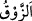
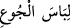
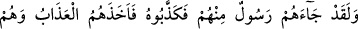
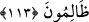

ekmeğe nankörlük ederse bütün nimetlere nankörlük etmiş ve onların zevalini taleb
etmiş olur. Ehl-i sünnet ve’l-cemaatin sahip olduğu sahih îtikad da, sâlih amellerinin
kabulünün üzerine bina edildiği esastır. Kim îtikadını ifsad ederse dinini de ifsad etmiş
ve Allah’ın gazabını celbetmiş olur.
Şehrin zâhidi hırkasını zemzem suyuyla yıkasa
Ondan ne fayda, eğer ezelî tahâreti yoksa?!
Asıl gaye, varlık kirinden ve Allah’ın dışındaki şeylere takılmaktan kalbini ve
varlığını temizlemektir.
“Allah da onlara,” daha önce “yaptıklarından” küfran-ı nimette bulunmalarından
“ötürü açlık ve korku sıkıntısını tattırdı.” Allah onlara açlık elbisesini tattırdı. O
kadar ki kendi çıkardıkları pislikleri yediler. Çünkü ceza amel cinsinden olur.
“
” ağızla tatma anlamına gelen bir fiildir. İmtihan ve ibtilâ mânâsı için istiare
olarak alınmıştır. Nitekim Ebü’l-Leys Tefsîri’nde böyle geçmektedir.
el-Es’iletü’l-mukhime fil-ecvibeti’l-müfhıme’de der ki: (Âyette açlık ‘
’
(Açlık elbisesi) diye isimlendirilmiştir.) “Açlık nasıl elbise olarak isimlendirilir?”
denilirse şöyle cevap verilir: Tıpkı elbise gibi açlık da insanın zayıflığını, renginin
solmasını ve bitkinliğini ortaya koyar.
el-İrşâd’da der ki: Açlık ve korkunun tesiri ile onları kuşatan zararı, vücudu kaplayan
elbiseye benzetilmiştir. Elbise istiare olarak alınmış, isâbetin şiddetini bildiren müstear
olarak kullanılan ‘tattırma’ onun üzerine getirilmiştir. Çünkü tecrid yoluyla onda
dokunma ve tatma idrâki bir araya gelmektedir. Onun bu anlamda kullanılışı yaygın
olduğundan ve insanların konuşmalarında çok geçtiğinden hakikat yerinde kullanılmıştır.
Sonra yaptıkları bu nankörlüğün sadece akıla ters düşmekle kalmayıp bilakis Allah’ın
kullarına gönderdiği huccetine de karşı olduğunu beyan ederek buyuruyor ki:
113. Andolsun ki, onlara kendilerinden peygamber geldi de onu yalanladılar.
Onlar zulmederlerken azap onları yakalayıverdi.
“Andolsun ki, onlara” o ülke halkına “kendilerinden” kendi cinslerinden aslı ve
nesebi ile tanıdıkları bir “peygamber geldi” onlara nimete şükretmenin gerekli
olduğunu haber verdi, nimete küfranın acı akıbetiyle onları ikaz etti “de onu” onun
peygamberliğini “yalanladılar. Onlar zulmederlerken” zâlim oldukları halde “azab”
bir nebze tattıkları azab sonunda köklerini kazıyan şiddetli asıl azab “onları